中文
中文C. Liu et al.
Editor’s Note
Laser light shining on an opaque medium can sometimes make it transparent to other light, a phenomenon known as electromagnetically induced transparency. The optical properties of the medium change so dramatically that light pulses can be slowed and compressed by many orders of magnitude. Here Chien Liu and colleagues report on experiments in which they used the effect to bring laser pulses to a complete standstill in a cold gas of sodium atoms held in a magnetic trap. They also show that information may be frozen into the atomic medium for as long as 1 microsecond, and then recovered. Liu and colleagues suggest that this technique could be useful in the development of quantum computers and other quantum information systems. 中文
Electromagnetically induced transparency1-3 is a quantum interference effect that permits the propagation of light through an otherwise opaque atomic medium; a “coupling” laser is used to create the interference necessary to allow the transmission of resonant pulses from a “probe” laser. This technique has been used4-6 to slow and spatially compress light pulses by seven orders of magnitude, resulting in their complete localization and containment within an atomic cloud4. Here we use electromagnetically induced transparency to bring laser pulses to a complete stop in a magnetically trapped, cold cloud of sodium atoms. Within the spatially localized pulse region, the atoms are in a superposition state determined by the amplitudes and phases of the coupling and probe laser fields. Upon sudden turn-off of the coupling laser, the compressed probe pulse is effectively stopped; coherent information initially contained in the laser fields is “frozen” in the atomic medium for up to 1 ms. The coupling laser is turned back on at a later time and the probe pulse is regenerated: the stored coherence is read out and transferred back into the radiation field. We present a theoretical model that reveals that the system is self-adjusting to minimize dissipative loss during the “read” and “write” operations. We anticipate applications of this phenomenon for quantum information processing. 中文
WITH the coupling and probe lasers used in the experiment, the atoms are accurately modelled as three-level atoms interacting with the two laser fields (Fig. 1a). Under perfect electromagnetically-induced transparency (EIT) conditions (two-photon resonance), a stationary eigenstate exists for the system of a three-level atom and resonant laser fields, where the atom is in a “dark”, coherent superposition of states
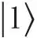
and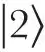
: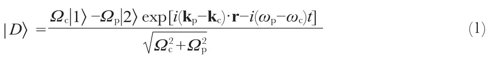
Here Ωp and Ωc are the Rabi frequencies, kp and kc the wavevectors, and ωp and ωc the optical angular frequencies of the probe and coupling lasers, respectively. The Rabi frequencies are defined as Ωp,c≡e Ep,c·r13,23 / ħ, where e is the electron charge, Ep,c are the slowly varying envelopes of probe and coupling field amplitudes, and e r13,23 are the electric dipole moments of the atomic transitions. The dark state does not couple to the radiatively decaying state
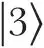
, which eliminates absorption of the laser fields1-3. 中文
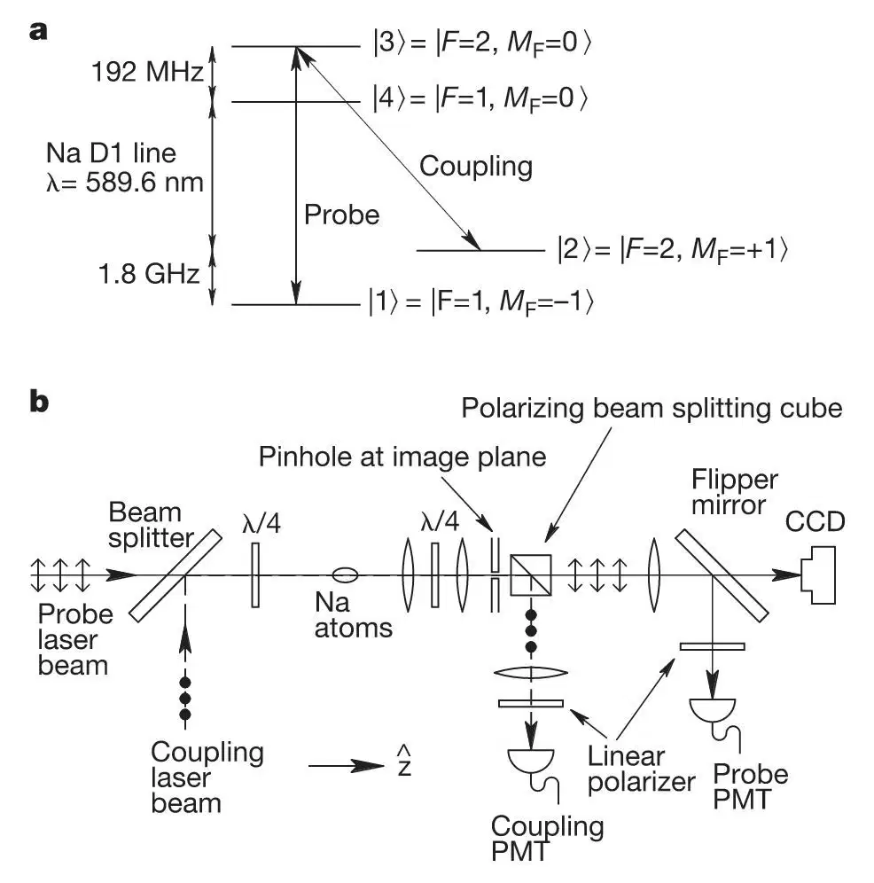
Fig. 1. Experimental set-up and procedure. a, States
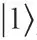
,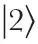
and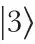
form the three-level EIT system. The cooled atoms are initially magnetically trapped in state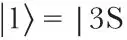
, F=1,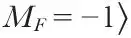
. Stimulated photon exchanges between the probe and coupling laser fields create a “dark” superposition of states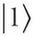
and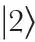
, which renders the medium transparent for the resonant probe pulses. b, We apply a 2.2-mm diameter, σ－-polarized coupling laser, resonant with the |3S, F=2,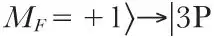
, F=2,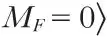
transition, and a co-propagating, 1.2-mm diameter σ+-polarized probe pulse tuned to the |3S, F=1,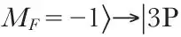
, F=2,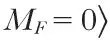
transition. The two laser beams start out with orthogonal linear polarizations (two-headed arrows and filled circles show the directions of linear polarization of the probe and coupling lasers, respectively). They are combined with a beam splitter, circularly polarized with a quarter-wave plate (λ / 4), and then injected into the atom cloud. After leaving the cloud, the laser beams pass a second quarter-wave plate and regain their original linear polarizations before being separated with a polarizing beam-splitting cube. The atom cloud is imaged first onto an external image plane and then onto a CCD (charge-coupled device) camera. A pinhole is placed in the external image plane and positioned at the centre of the cloud image. With the pinhole and flipper mirror in place, only those portions of the probe and coupling laser beams that have passed through the central region of the cloud are selected and monitored simultaneously by two photomultiplier tubes (PMTs). States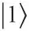
and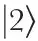
have identical first-order Zeeman shifts so the two-photon resonance is maintained across the trapped atom clouds. Cold atoms and co-propagating lasers eliminate Doppler effects. However, off-resonance transitions to state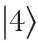
prevent perfect transmission of the light pulses in this case. 中文
Atoms are prepared (magnetically trapped) in a particular internal quantum state
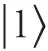
(Fig. 1a). The atom cloud is first illuminated by a coupling laser, resonant with the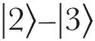
transition. With only the coupling laser on and all atoms in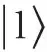
, the system is in a dark state (equation (1) with Ωp=0). A probe laser pulse, tuned to the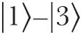
transition and co-propagating with the coupling laser, is subsequently sent through the atomic medium. Atoms within the pulse region are driven into the dark-state superposition of states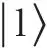
and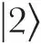
, determined by the ratio of the instantaneous Rabi frequencies of the laser fields (equation (1)). 中文
The presence of the coupling laser field creates transparency, a very steep refractive index profile, and low group velocity, Vg, for the probe pulse1-10. As the pulse enters the atomic medium, it is spatially compressed by a factor c / Vg whereas its peak electric amplitude remains constant during the slow-down4,7. 中文
The experiment is performed with the apparatus described in refs 4 and 11. Figure 1 shows the new optical set-up and atomic energy levels involved. A typical cloud of 11 million sodium atoms is cooled to 0.9 μK, which is just above the critical temperature for Bose–Einstein condensation. The cloud has a length of 339 μm in the z direction, a width of 55 μm in the transverse directions, and a peak density of 11 μm－3. Those portions of the co-propagating probe and coupling laser beams that have passed through the 15-μm-diameter centre region of the cloud are selected and monitored simultaneously by two photomultiplier tubes (PMTs). 中文
Figure 2a shows typical signals detected by the PMTs. The dashed curve is the measured intensity of the coupling laser, which is turned on a few microseconds before the probe pulse. The open circles indicate a gaussian-shaped reference probe pulse recorded in the absence of atoms (1 / e full width is 5.70 μs). The filled circles show a probe pulse measured after it has passed through a cold atom cloud, and the solid curve is a gaussian fit to the data. The delay of this probe pulse, relative to the reference pulse, is 11.8 μs corresponding to a group velocity of 28 m s－1, a reduction by a factor of 107 from its vacuum value. The measured delay agrees with the theoretical prediction of 12.2 μs based on a measured coupling Rabi frequency Ωc of 2.57 MHz×2π and an observed atomic column density of 3,670 μm－2. 中文
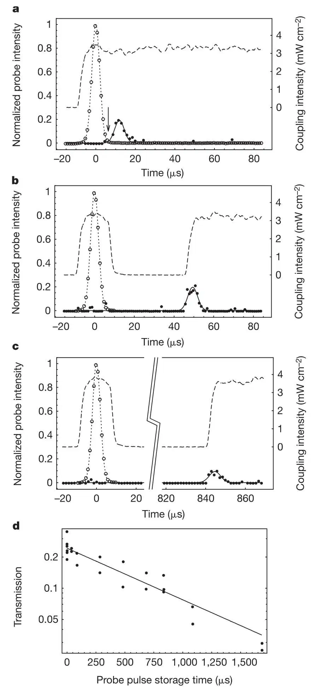
Fig. 2. Measurements of delayed and revived probe pulses. Open circles (fitted to the dotted gaussian curves) show reference pulses obtained as the average of 100 probe pulses recorded in the absence of atoms. Dashed curves and filled circles (fitted to the solid gaussian curves) show simultaneously measured intensities of coupling and probe pulses that have propagated under EIT conditions through a 339-μm-long atom cloud cooled to 0.9 μK. The measured probe intensities are normalized to the peak intensity of the reference pulses (typically, Ωp / Ωc=0.3 at the peak). a, Probe pulse delayed by 11.8 μs. The arrow at 6.3 μs indicates the time when the probe pulse is spatially compressed and contained completely within the atomic cloud. (The intersection of the back edge of the reference pulse and the front edge of the delayed pulse defines a moment when the tail of the probe pulse has just entered the cloud and the leading edge is just about to exit.) b, c, Revival of a probe pulse after the coupling field is turned off at t=6.3 μs and turned back on at t=44.3 μs and t=839.3 μs, respectively. During the time interval when the coupling laser is off, coherent information imprinted by the probe pulse, is stored in the atomic medium. Upon subsequent turn-on of the coupling field, the probe pulse is regenerated through coherent stimulation. The time constants for the probe and coupling PMT amplifiers are 0.3 μs and 3 μs, respectively. The actual turn on / off time for the coupling field is 1 μs, as measured with a fast photodiode. d, Measured transmission of the probe pulse energy versus storage time. The solid line is a fit to the data, which gives a 1 / e decay time of 0.9 ms for the atomic coherence. 中文
At time t=6.3 μs, indicated by the arrow in Fig. 2a, the probe pulse is spatially compressed and contained completely within the atomic cloud. The probe pulse in free space is 3.4 km long and contains 27,000 photons within a 15-μm diameter at its centre. It is compressed in the atomic medium to match the size of the cloud (339 μm), and the remaining optical energy in the probe field is only 1 / 400 of a free-space photon. Essentially all of the probe energy has been transferred through stimulated emission into the coupling laser field and the atomic medium, and coherent optical information has been imprinted on the atoms (equation (1)). 中文
To store this coherent information, we turn off the coupling field abruptly when the probe pulse is contained within the cloud. The stored information is read out at a later time by turning the coupling laser back on. A result is shown in Fig. 2b. The dashed curve shows the coupling laser’s turn-off at t=6.3 μs and its subsequent turn-on at 44.3 μs. The filled circles represent the measured probe intensity. As seen from the data, when the coupling laser is turned back on the probe pulse is regenerated: we can stop and controllably regenerate the probe pulse. Similar effects have been predicted in a recent theoretical paper12. 中文
When the probe pulse is contained within the medium, the coherence of the laser fields is already imprinted on the atoms. As the coupling laser is turned off, the probe field is depleted to maintain the dark state (equation (1)) and (negligible) atomic amplitude is transferred from state
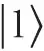
to state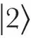
through stimulated photon exchange between the two light fields. Because of the extremely low energy remaining in the compressed probe pulse, as noted above, it is completely depleted before the atomic population amplitudes have changed by an appreciable amount. When the coupling laser is turned back on, the process reverses and the probe pulse is regenerated through stimulated emission into the probe field. It propagates subsequently under EIT conditions as if the coupling beam had never been turned off. 中文
During the storage time, information about the amplitude of the probe field is contained in the population amplitudes defining the atomic dark states. Information about the mode vector of the probe field is contained in the relative phase between different atoms in the macroscopic sample. The use of cold atoms minimizes thermal motion and the associated smearing of the relative phase during the storage time. (We obtain storage times that are up to 50 times larger than the time it takes an atom to travel one laser wavelength. As seen from equation (1), the difference between the wavevectors of the two laser fields determines the wavelength of the periodic phase pattern imprinted on the medium, which is 105 times larger than the individual laser wavelengths.) 中文
The regenerated probe pulse in Fig. 2b has the same shape as the “normal” EIT pulse shown in Fig. 2a. Figure 2c shows a case where the optical coherence is stored in the atomic medium for more than 800 μs before it is read out by the coupling laser. Here the amplitude of the revived probe pulse is reduced compared to that of the pulse in Fig. 2b. Figure 2d shows the measured transmission for a series of pulses as a function of their storage time in the atom cloud. The data are consistent with an exponential decay with a 1 / e decay time of 0.9 ms, comparable to the calculated mean free time of 0.5 ms between elastic collisions in the atom cloud with a density of 11 μm－3. Further studies of the decoherence mechanisms are planned but are beyond the scope of this Letter. 中文
We have verified experimentally that the probe pulse is regenerated through stimulated rather than spontaneous emission. To do this, we prepared all atoms in state
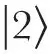
and subsequently turned on the coupling laser alone. The coupling laser was completely absorbed for tens of microseconds without generating any signal in the probe PMT. 中文
In Fig. 3a–c, we show three PMT signal traces recorded under similar conditions except that we vary the intensity, Ic2, of the coupling laser when it is turned back on. When Ic2 is larger than the original coupling intensity, Ic1, the amplitude of the revived probe pulse increases and its temporal width decreases (Fig. 3a). For Ic2<Ic1, the opposite occurs (Fig. 3c). These results support our physical picture of the process. The stored atomic coherence dictates the ratio of the Rabi frequencies of the coupling and revived probe fields, as well as the spatial width of the regenerated pulse. In Fig. 3d we show that with a large Ic2, the peak intensity of the revived probe pulse exceeds that of the original input pulse by 40%. 中文
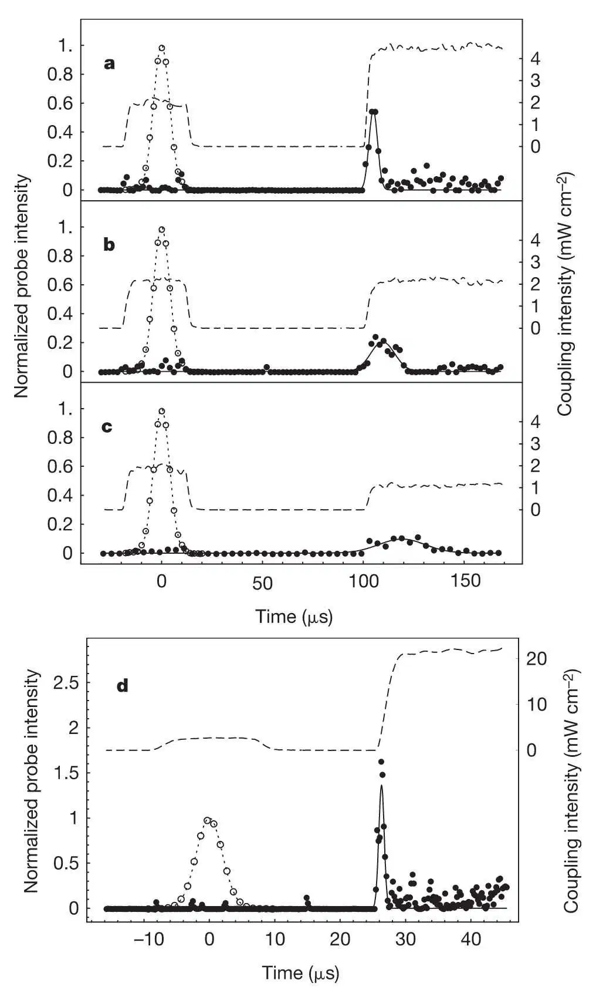
Fig. 3. Measurements of revived probe pulses for varying intensities (Ic2) of the second coupling pulse. The intensity (Ic1) of the first coupling pulse is held constant. a–c, The figures are recorded for Ic2 / Ic1 ratios of 2, 1, and 0.5, respectively. A series of data show that the height and the inverse temporal width of the revived pulses are each proportional to Ic2. These observations are consistent with our physical picture. Because the atomic coherence dictates the ratio of the Rabi frequencies for the coupling and revived probe fields (equation (1)), the intensity of the regenerated probe pulse is proportional to the intensity of the coupling laser when it is turned back on. Furthermore, the spatial width of the revived pulse is determined by the distribution of the atomic coherence and is thus the same as the spatial extent of the original compressed pulse. The group velocity of the probe pulse under EIT conditions is proportional to the coupling intensity4,7. With a larger (smaller) Ic2, the revived probe pulse acquires a proportionally larger (smaller) group velocity, which causes its temporal width to be inversely proportional to Ic2. Panel d shows that the intensity of the revived probe pulse can exceed that of the original input pulse, in this instance by 40%. (The observed peak-to-peak fluctuation of laser intensity is less than 10%.) The energy in the revived probe pulses is the same in all panels a–d, owing to the fact that the total stored amplitude of state
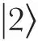
atoms (available to stimulate photons into the probe field) is the same in all cases. Meanings of lines and symbols as in Fig. 2. 中文
Dissipationless pulse storage and revival processes are only possible if the ratio between the rates of dissipative and coherence-preserving events is small. When the coupling field is increased or decreased quickly compared to the duration of the probe pulse (τ) but slowly compared to 1 / Γ, this ratio is equal to (Z.D. and L.V.H., manuscript in preparation)
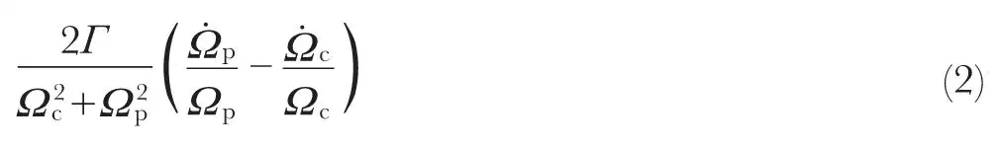
where Γ is the spontaneous decay rate from state
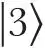
. Our numerical simulations show that the probe field is constantly adjusting to match the changes in the coupling field in such a way that the terms in brackets in equation (2) nearly cancel13,14. Even for turn-off times faster than 1 / Γ, we can show that there is no decay of the coherence between states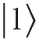
and as long as ; here Ωc0 and Ωp0 are the Rabi frequencies before the coupling turn-off. (The adiabatic requirement introduced in ref. 12 as necessary for non-dissipative behaviour is much too strict. That requirement would inevitably break down for low coupling laser powers during turn-on or turn-off.) 中文
; here Ωc0 and Ωp0 are the Rabi frequencies before the coupling turn-off. (The adiabatic requirement introduced in ref. 12 as necessary for non-dissipative behaviour is much too strict. That requirement would inevitably break down for low coupling laser powers during turn-on or turn-off.) 中文
We have demonstrated experimentally that coherent optical information can be stored in an atomic medium and subsequently read out by using the effect of EIT in a magnetically trapped, cooled atom cloud. We have experimentally verified that the storage and read-out processes are controlled by stimulated photon transfers between two laser fields. Multiple read-outs can be achieved using a series of short coupling laser pulses. In Fig. 4a and b we show measurements of double and triple read-outs spaced by up to hundreds of microseconds. Each of the regenerated probe pulses contains part of the contents of the “atomic memory”, and for the parameters chosen, the memory is depleted after the second pulse and after the third pulse. 中文
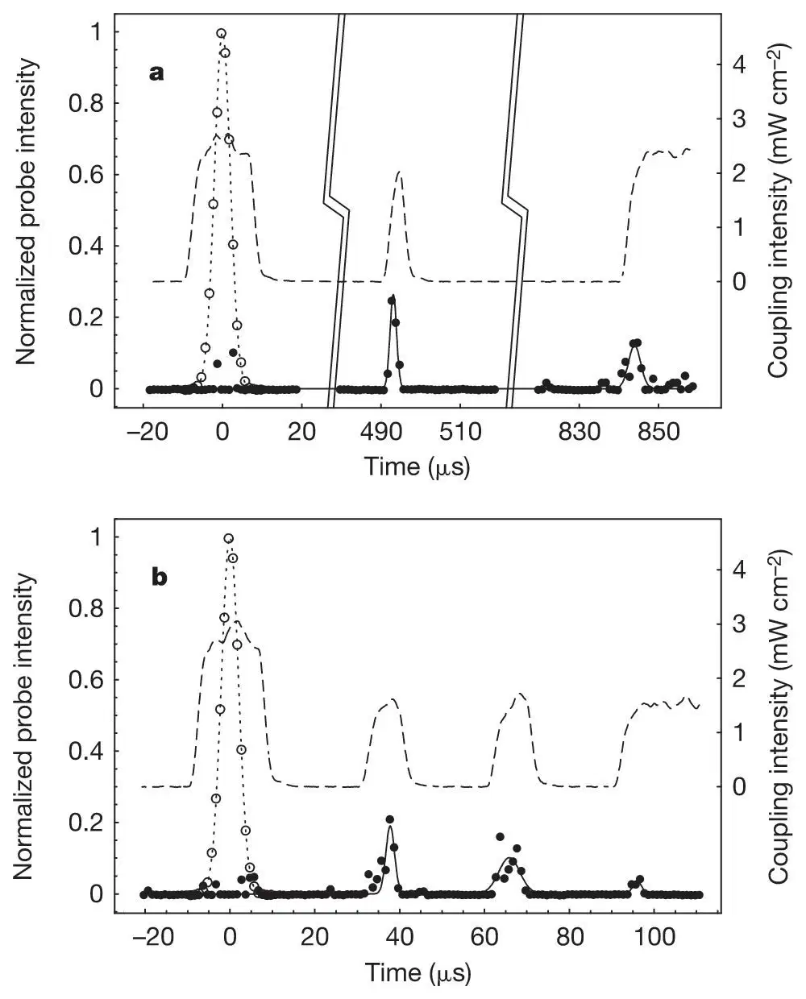
Fig. 4. Measurements of double and triple read-out of the atomic memory. To deplete the atomic memory in these cases, we use two (a) and three (b) short coupling pulses. The total energy in the two (three) revived probe pulses is measured to be the same as the energy in the single revived probe pulse obtained with a single, long coupling laser pulse (as used in Figs 2 and 3). Meanings of lines and symbols as in Fig. 2. 中文
We believe that this system could be used for quantum information transfer; for example, to inter-convert stationary and flying qubits15. By injection of multiple probe pulses into a Bose–Einstein condensate—where we expect that most atomic collisions are coherence-preserving—and with use of controlled atom–atom interactions, quantum information processing may be possible during the storage time. 中文
(409, 490-493; 2001)
Chien Liu*†, Zachary Dutton*‡, Cyrus H. Behroozi*† & Lene Vestergaard Hau*†‡
* Rowland Institute for Science, 100 Edwin H. Land Boulevard, Cambridge, Massachusetts 02142, USA
† Division of Engineering and Applied Sciences, ‡ Department of Physics, Harvard University, Cambridge, Massachusetts 02138, USA
Received 13 October; accepted 17 November 2000.
References:
1. Harris, S. E. Electromagnetically induced transparency. Phys. Today 50, 36-42 (1997).
2. Scully, M. O. & Zubairy, M. S. Quantum Optics (Cambridge Univ. Press, Cambridge, 1997).
3. Arimondo, E. in Progress in Optics (ed. Wolf, E.) 257-354 (Elsevier Science, Amsterdam, 1996).
4. Hau, L. V., Harris, S. E., Dutton, Z. & Behroozi, C. H. Light speed reduction to 17 metres per second in an ultracold atomic gas. Nature 397, 594-598 (1999).
5. Kash, M. M. et al. Ultraslow group velocity and enhanced nonlinear optical effects in a coherently driven hot atomic gas. Phys. Rev. Lett. 82, 5229-5232 (1999).
6. Budker, D., Kimball, D. F., Rochester, S. M. & Yashchuk, V. V. Nonlinear magneto-optics and reduced group velocity of light in atomic vapor with slow ground state relaxation. Phys. Rev. Lett. 83, 1767-1770 (1999).
7. Harris, S. E., Field, J. E. & Kasapi, A. Dispersive properties of electromagnetically induced transparency. Phys. Rev. A 46, R29-R32 (1992).
8. Grobe, R., Hioe, F. T. & Eberly, J. H. Formation of shape-preserving pulses in a nonlinear adiabatically integrable system. Phys. Rev. Lett. 73, 3183-3186 (1994).
9. Xiao, M., Li, Y.-Q., Jin, S.-Z. & Gea-Banacloche, J. Measurement of dispersive properties of electromagnetically induced transparency in rubidium atoms. Phys. Rev. Lett. 74, 666-669 (1995).
10. Kasapi, A., Jain, M., Yin, G. Y. & Harris, S. E. Electromagnetically induced transparency: propagation dynamics. Phys. Rev. Lett. 74, 2447-2450 (1995).
11. Hau, L. V. et al. Near-resonant spatial images of confined Bose-Einstein condensates in a 4-Dee magnetic bottle. Phys. Rev. A 58, R54-R57 (1998).
12. Fleischhauer, M. & Lukin, M. D. Dark-state polaritons in electromagnetically induced transparency. Phys. Rev. Lett. 84, 5094-5097 (2000).
13. Harris, S. E. Normal modes for electromagnetically induced transparency. Phys. Rev. Lett. 72, 52-55 (1994).
14. Fleischhauer, M. & Manak, A. S. Propagation of laser pulses and coherent population transfer in dissipative three-level systems: An adiabatic dressed-state picture. Phys. Rev. A 54, 794-803 (1996).
15. DiVincenzo, D. P. The physical implementation of quantum computation. Preprint quant-ph / 0002077 at〈http://xxx.lanl.gov〉(2000).
Acknowledgements. We thank J. Golovchenko for discussions during which the idea of the rapid turn off and on of the coupling laser first emerged. We also thank M. Burns for critical reading of the manuscript. This work was supported by the Rowland Institute for Science, the Defense Advanced Research Projects Agency, the US Airforce Office of Scientific Research, and the US Army Research Office OSD Multidisciplinary University Research Initiative Program.
Correspondence and requests for materials should be addressed to C.L. (e-mail: chien@deas.harvard.edu).